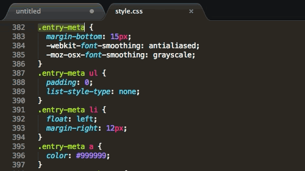
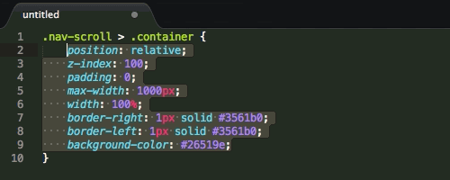

sublime技巧
发布时间：2015/12/08
作者：小猪猪
阅读：（20）
1) 选择
以下是一些Sublime Text选择文本的快捷键：- Command + D 选中一个单词
- Command + L 选中一行
- Command + A 全选
- Ctrl + Command + M` 选中括号内所有内容 (编写CSS或JS时非常实用)
Sublime Text还支持一次选中多行的操作：Furthermore, Sublime Text brings lets us select multiple lines at once, which can significantly boost your productivity. There are several ways to perform this feature: - Command 按住Command键再点击想选中的行
- Command + Ctrl + G (选中部分文本时) 按此键选中所有相同文本
- Command + D (选中部分文本时) 直接选中下一次出现的该文本

2) CSS排序
CSS属性的顺序一般不重要，因为无论何种顺序浏览器都能正确渲染。但排序所有的属性还是有助于代码的整洁。在Sublime Text中，选中CSS属性后按F5就可以按字母顺序排序。
也可以使用 CSSComb 等第三方插件，更详细的控制排序的方法。
3) 命令面板（Command Palette）
使用命令面板可以快速完成多重任务。按Command + Shift + P调出面板，键入需要的命令即可。看以下的几个示例：▼ 重命名文件
▼ 设置文件为HTML语法
▼ 插入代码片段
4) 切换标签页与工程
在同时打开多个标签页时，可以用以下的热键切换：- Command + T 列出所有的标签页
- Command + Shift + ] 下一标签页
- Command + Shift + [ 上一标签页
- Command + Ctrl + P 切换侧边栏显示的工程
5) 跨文件编辑
同一个编辑操作可以在多个文件中同时重复。举个例子，多个文件中有同一段代码时，可用以下的步骤快速编辑：- 按Command + Shift + F在Find框中输入待查找的代码。可按Command + E快速使用选择中的代码段。
- 在Where框中指定需要查找的文件范围，或填写
- 在Replace框中输入要替换成的代码，按Replace按钮批量替换。
6) 文件爬虫
按Command + R可以列出文档中所有的CSS选择器。可以选择并立刻跳转查看。这个操作比使用一般的“查找”功能快得多。7) 拼写检查
如果你经常使用Sublime Text从事英文创作，那么启用拼写检查就非常有用处了。选择Preferences > Settings – User菜单，添加以下代码：- "spell_check": true,
8) 增强侧边栏
SideBarEnhancements插件有效地改进了Sublime Text的侧边栏。安装插件后在侧边栏上点击右键，可以找到一下新功能：在资源管理器中打开、新建文件、新建文件夹、以…打开、在浏览器中打开。- 注：在浏览器中打开的热键是F12。
9) 更换主题
Sublime Text的外观主题可以更换。Soda Theme就是一个不错的主题，可以在包管理器中安装。- 如果要安装的主题并不在在线软件仓库中，也可以手动安装：
- 下载并解压缩主题包
- 点击菜单 Preferences > Browse Packages…
- 把主题文件夹复制到Packages文件夹中.
- 点击菜单 Preferences > Settings – Users 并加入以下代码："theme": "Soda Light.sublime-theme"
10) 更换Sublime Text程序图标
不仅主题可以更换，图标也可以。在Dribbble上有大量重新设计的Sublime Text精美图标。更换方法：- 下载一个图标，有.icns格式的最好。如果没有，用iConvert转换之。
- 终端执行：open /Applications/Sublime\ Text.app/Contents/Resources/
- 替换Sublime Text 3.icns或Sublime Text 2.icns文件。
11) 同步选项
如果在多台计算机上工作，同步选项设置应该是一个好主意。我们借用Dropbox完成这一任务。 首先在终端中运行以下命令上传设置文件：mkdir $HOME/Dropbox/sublime-text-3/
mv "$HOME/Library/Application Support/Sublime Text 3/Packages" "$HOME/Dropbox/sublime-text-3/"
mv "$HOME/Library/Application Support/Sublime Text 3/Installed Packages" "$HOME/Dropbox/sublime-text-3/"
- 然后在所有需要同步的计算机上运行以下命令下载设置：
DSTPATH="$HOME/Library/Application Support/Sublime Text 3"
DROPBOX_PATH="$HOME/Dropbox/sublime-text-3"
rm -rf "$DSTPATH/Installed Packages"
rm -rf "$DSTPATH/Packages"
mkdir -p "$DSTPATH"
ln -s "$DROPBOX_PATH/Packages" "$DSTPATH/Packages"
ln -s "$DROPBOX_PATH/Installed Packages" "$DSTPATH/Installed Packages"